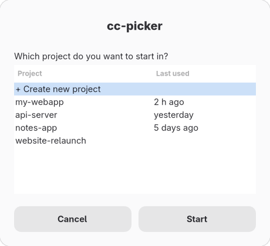

Without cc-picker
- Open a terminal
- Remember where the project lives
- Type the path to get there
- Start Claude Code – and hope it's the right folder
$ cd ~/code/clients/acme/webapp # or was it ~/dev? $ claude # …or forget the cd and start in ~
A project launcher for Claude Code on Linux
Pick a folder from a list, and Claude Code starts right inside it – with that project as its working folder, instead of wherever your terminal happened to be.
Lists ~/claude-projects, recent first, opens a terminal in the chosen folder and starts claude there. Pure Bash; zenity, kdialog or yad for the window.
← pull out a folder to try it
(demo – nothing is launched)
Claude Code treats the folder it starts in as your project. Starting it in the right one should take one click.
claude operates on its working directory. cc-picker turns that directory into a deliberate choice.
$ cd ~/code/clients/acme/webapp # or was it ~/dev? $ claude # …or forget the cd and start in ~
$ cc-picker # pick → terminal opens in ~/claude-projects/<name> # → exec claude $ cc-picker -c webapp # or straight in, continuing
Three things, done well.
One Bash script. No framework, runtime service or background daemon. Uses standard Linux tools and your existing Claude Code installation.
A list of your projects. The ones you used lately sit on top, with “2 h ago” or “yesterday” next to them.
Recent list in ~/.local/state/cc-picker/recent (max. 50), pinned projects first. Deleted folders are skipped, hidden ones aren't listed.
Starting fresh? Type a name and pick a template if you like. Code already online? Paste its address and it's downloaded for you.
Name validation (no /, no leading ./-). Optional git clone with a progress dialog; failures show git's reason and leave no empty folder.
A terminal opens in that folder with Claude Code already running. Quit Claude, and you're still in the right place.
Commands are %q-quoted; works with gnome-terminal, konsole, xfce4-terminal, alacritty, kitty and xterm.
New in version 0.3 – everything optional, nothing gets in your way.
New in 0.3.0. All of it configurable in ~/.config/cc-picker/config.
Worked on the project before? Start fresh, continue your last conversation with Claude, or pick an earlier one.
Asked only if the project has sessions: new, claude --continue or --resume. Skip it with -n/-c/-r or CC_PICKER_SESSION.
Lots of projects? Type part of the name to filter the list. Or skip the list: cc-picker notes starts right in “notes”.
Text filter in the menu, fzf if installed. cc-picker NAME takes a unique prefix; cc-picker - opens the last project.
For projects under version control, the list shows the branch and how many files you've changed – before you start.
git status --porcelain -b per repo, 2 s timeout, no lock files. Off with CC_PICKER_GIT_STATUS=0.
Pin the projects you use most – they stay on top. Projects spread over several folders? Show them all in one list.
Pins in ~/.local/state/cc-picker/pinned. CC_PICKER_BASE=~/claude-projects:~/code – new projects go into the first folder.
New projects can start from a template – for example with notes for Claude about the project already in place.
Folders in ~/.config/cc-picker/templates/; {{PROJECT_NAME}} is filled in, then git init. Ships with CLAUDE.md + .gitignore. Cloning takes user/repo.
Open a project in your file manager or editor, rename it, or put it away in the archive – nothing is deleted. Updates take one command.
“Manage projects” in the list: xdg-open, CC_PICKER_EDITOR, rename, archive to .archive/ and restore. cc-picker --update installs the newest release.
Click through a window, or type a number – whatever feels natural.
The window is the default; --shell-mode or CC_PICKER_MODE=shell for the menu. No dialog tool installed? It falls back to the menu automatically.

$ cc-picker --shell-mode 1) ★ my-webapp (2 h ago · main) 2) api-server (yesterday · dev · 3 changed) 3) notes-app (5 days ago) 4) + Create new project 5) ⚙ Manage projects … #? api
fzf takes over if installed; Ctrl+D quits with exit code 0.Arch Linux and Debian: confirmed in use. Ubuntu: automated functional tests (no full desktop test). Linux Mint, Manjaro, Fedora and openSUSE: expected to work with the required dependencies, but not yet verified separately.
Open a terminal, paste these two lines one after the other and press Enter each time. Done.
Installs into ~/.local – no root needed.
git clone https://github.com/bruneler/cc-picker.gitcd cc-picker && ./install.sh~/.local/share/applications/cc-picker.desktop + iconcc-picker command work in any terminalAdds ~/.local/bin to PATH for bash, zsh, fish or ~/.profile – oncesudo pacman -S --needed zenity, only after confirmationNo. cc-picker is an independent community project. It simply starts the official claude program in a folder you choose.
The launcher keeps settings and recent projects locally. Optional Git cloning, package installation and Claude Code itself can use the network. See our privacy notice below.
No – and that's worth knowing. The start folder is where Claude Code works by default, not a security boundary: depending on its permissions it can still read, change or run things elsewhere. What Claude Code may do is set by its own permission settings, and cc-picker doesn't change them.
Only for the two install lines. After that, cc-picker lives in your app menu and works with clicks.
In ~/claude-projects by default. To use another folder, write CC_PICKER_BASE=~/somewhere/else into ~/.config/cc-picker/config. Several folders work too, separated by :.
Not at the moment – cc-picker is made for Linux with Bash. See the distribution test status in the installation section. The window uses zenity, kdialog or yad; terminal mode needs no desktop.
Run cc-picker --update. It installs the newest version if there is one, and keeps your settings, templates and project list.
Delete three files: rm ~/.local/bin/cc-picker ~/.local/share/applications/cc-picker.desktop ~/.local/share/icons/cc-picker.svg. Your projects stay where they are.